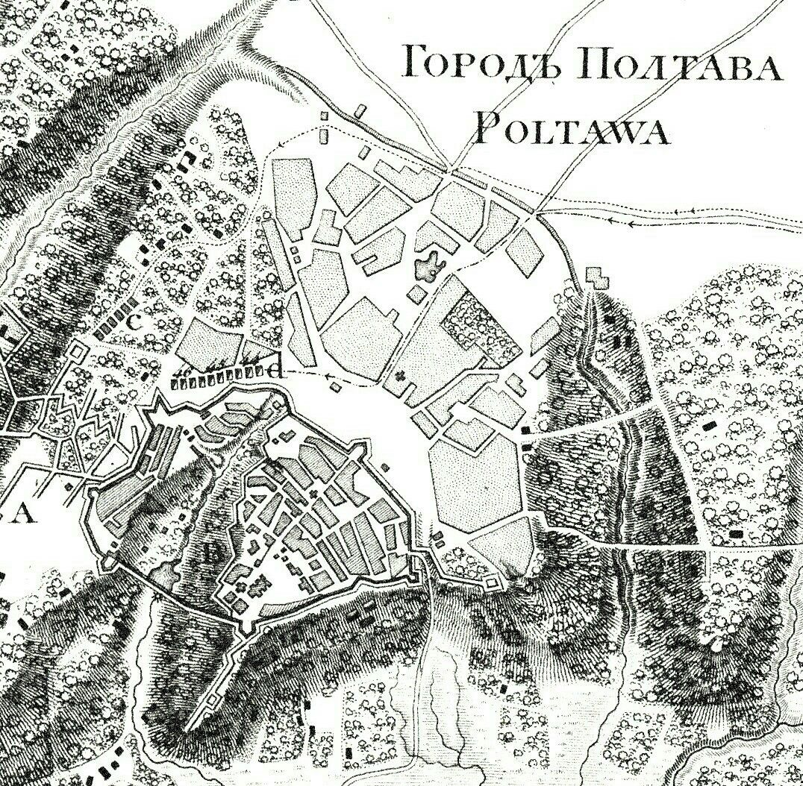

Історія

Цікаві історичні відомості про Полтаву:
Початок:
- IX-X століття: Перші поселення на території сучасної Полтави.
- 1174: Перша письмова згадка про Полтаву в Іпатіївському літописі.
- XIII-XIV століття: Полтава під владою монголо-татар.
- XV-XVI століття: Полтава у складі Великого князівства Литовського.
Козацька епоха:
- 1648: Полтава стає центром Полтавського полку в складі Гетьманщини.
- Гетьмани, які очолювали полк: Іван Мазепа, Іван Скоропадський, Данило Апостол, Кирило Розумовський.
- Один із 16 полків Гетьманщини.
Сформований у 1648 році.
Губернія:
- Після Полтавської битви місто стало центром Полтавської губернії. Полтава була важливим культурним та освітнім центром у 18-19 століттях. У місті народилися багато відомих українських письменників, поетів і художників.
- Під час радянської влади Полтава була важливим промисловим центром. У місті було багато заводів, які виробляли машини, хімікати та продукти харчування.
- Після розпаду Радянського Союзу Полтава стала центром незалежної України. Місто є важливим економічним, культурним та освітнім центром країни.